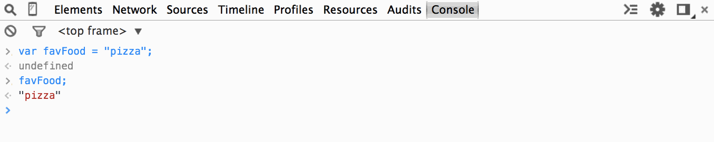

Basics of
Programming
Node.js
with Jessamyn Smith
Introduction
Wifi: CalVisitor (no password)
The class slides are available at:
https://nodejs-slides.herokuapp.com/
Welcome!
Setup
- Chrome Browser: https://www.google.ca/chrome
- Slides: https://nodejs-slides.herokuapp.com
- Cloud9 IDE: https://c9.io/signup
- Nodingbat: http://nodingbat.com/
HTML, CSS & JavaScript
JavaScript was created to manipulate web pages written in HTML and also works with CSS.
HTML (Hypertext Markup Language) is used to define the content and structure of web pages.
I'm just a paragraph.
CSS (Cascading Style Sheets) is used to create the look and feel of a web site.
I'm a paragraph with style.
JavaScript is a programming language developed to add dynamic behavior to a website.
I'm a paragraph that can be clicked. Try it!
Accessing the Console
In Chrome, there are a couple ways to open the Console tab.
Use the keyboard shortcut:
COMMAND + OPTION + J (MAC)
CONTROL + SHIFT + J (WINDOWS/LINUX).
OR
Select: View > Developer > JavaScript Console.
You can open the console when viewing any HTML page so let’s use this blank HTML page, console.html so we can have a blank slate to practice with throughout the day.
Open console.html now and take a moment to practice opening and closing the console until you’re comfortable with it.
Re-iterate to the class to keep console.html open in a tab to refer back to for the console exercises. A blank document was created rather than opening the console in the slide deck so any errors showing won't confuse the learners and take away from the lesson explaining things not needed for the task at hand.
JavaScript Overview
Variables & Functions
Let the learners know that these concepts are the building blocks of the language and it's important to understand the syntax, how each concept works and together all of this will be needed to create interactions with JS. It may be hard to see the bigger picture at first, we just have to go through the fundamental concepts to understand how to build a program to create different types of interactions.
Class exercise
Create a variable called favFood and give it a value. What is the syntax for creating a variable and assigning a string value?
var favFood = "pizza";Try adding the above code into the console on console.html. What value gets returned? undefined
That is perfectly fine. Remember, variables are used to store values until you're ready to use them. favFood is still holding on to the value so it returns nothing (undefined). But now, JavaScript now knows that you've assigned a value to a variable. To actually use the variable, just type favFood into the console. It will now return the value that it was storing.
Class exercise (continued)
Let’s try concatenating some strings with the favFood variable. In the console, try typing this command:
"My favorite food is " + favFood;
Note that when we execute a command without var, the assigned value of the variable gets returned instead of undefined. Reminder, var is used to a declare and create a variable and will hold the value, until used.
Challenge! How would you add a period to the end of the sentence?
Give some real world of examples of why or how variables can be used. Ex. form values can be used to create shipping labels.